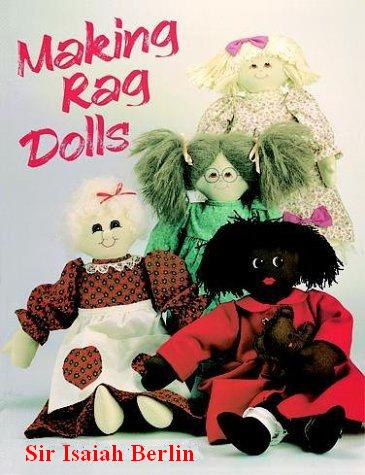
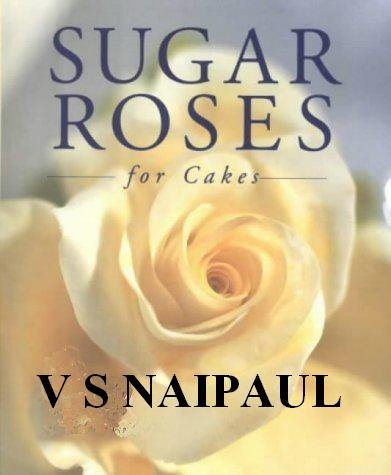
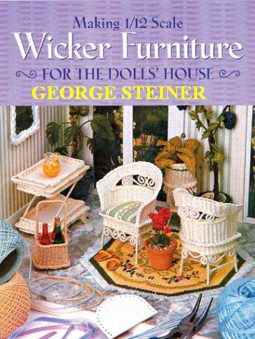

Tuesday, October the 5th, 2004
back to: title, date or indexes
Yesterday's note about ubercapitalist writer and “thinker” Ayn Rand having penned a work entitled Why I Like Stamp Collecting led me to wonder whether any other authors of portentous tomes have written similar paeans to their hobbies. As I cannot stir myself to do the necessary research, conjecture will have to do.
